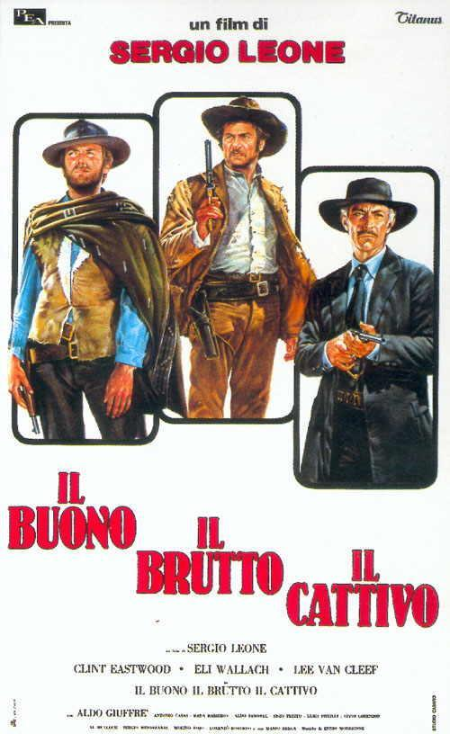

Buffalo'66
1998 ‧ Comedy/Romance ‧ 1h 50m

El Bueno, El Malo y El Feo
1966 ‧ Western/Action ‧ 2h 41m
Dirigida por Sergio Leone, es una de las películas más icónicas del género del spaghetti western, un verdadero clásico que definió el cine de vaqueros para toda una generación. Esta obra maestra presenta una trama tensa y absorbente que sigue a tres personajes complejos: Blondie (El Bueno, interpretado por Clint Eastwood), Angel Eyes (El Malo, interpretado por Lee Van Cleef) y Tuco (El Feo, interpretado por Eli Wallach). Cada uno de ellos tiene sus propios intereses, motivaciones y códigos morales, lo que desencadena una lucha por un botín de oro escondido, mientras el destino les lleva a cruzarse en un juego de traiciones, persecuciones y duelos.
Pulp Fiction
1994 ‧ Crime/Thriller ‧ 2h 29m
Dirigida por Quentin Tarantino, es una obra maestra del cine contemporáneo que redefine las convenciones del thriller, el crimen y el cine independiente. Esta película, famosa por su estructura no lineal y sus diálogos rápidos y cargados de tensión, entrelaza varias historias que giran en torno al crimen, la moralidad y la redención, todo en el universo de Los Ángeles. Desde la historia de dos matones, Vincent Vega (John Travolta) y Jules Winnfield (Samuel L. Jackson), hasta las vidas de un boxeador retirado (Bruce Willis), una pareja de criminales (Uma Thurman y Tim Roth) y un par de personajes más, "Pulp Fiction" teje de manera brillante relatos aparentemente desconectados que se entrelazan en un todo único e inolvidable.